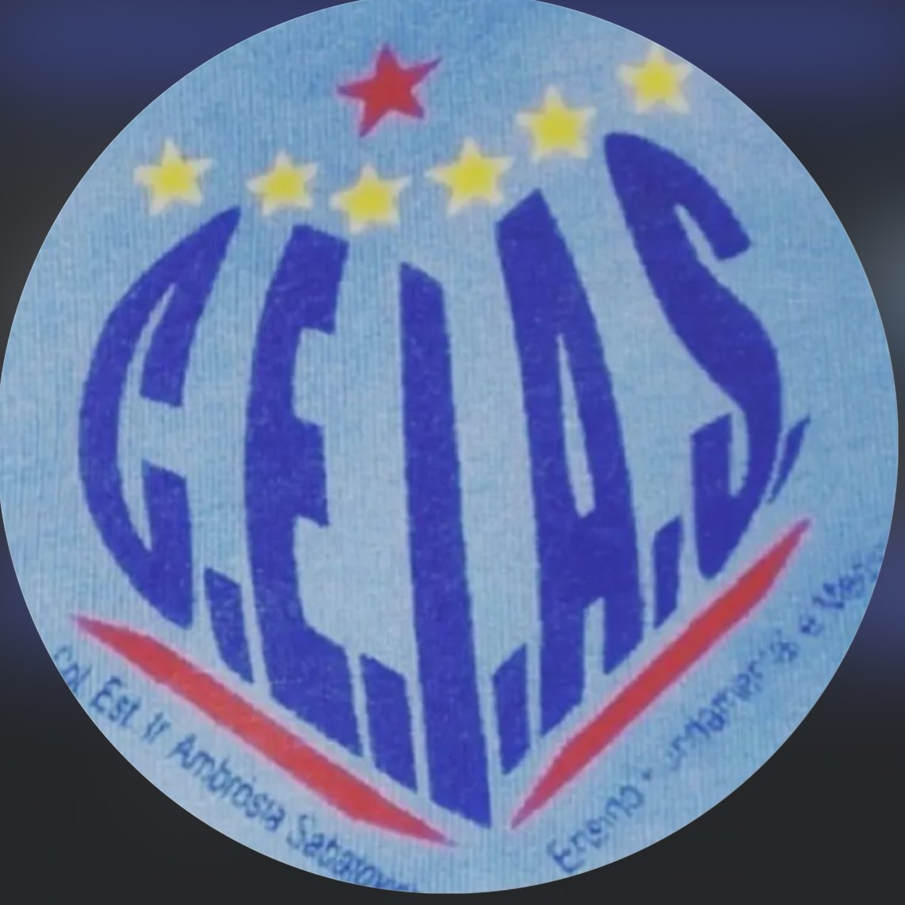
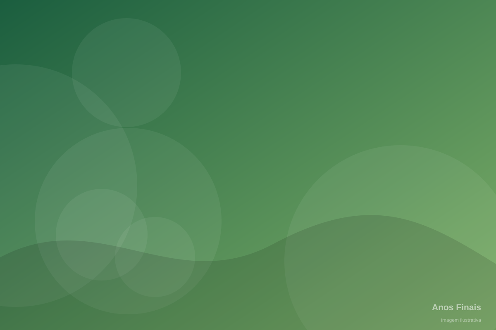

Colégio Estadual do Campo Irmã Ambrósia Sabatovich
Educação que transforma, comunidade que acolhe e história que permanece.
Um colégio conectado à sua comunidade, à cultura da Colônia Marcelino e ao futuro de seus estudantes.
Ensino
Conheça nossas etapas e modalidades de ensino.
Vida Escolar
Informações importantes para estudantes e famílias.
Projetos
Conheça os projetos desenvolvidos pelos alunos e professores.
Notícias
Acompanhe os acontecimentos do colégio.
Eventos
Veja nossa programação e atividades.
Contato
Entre em contato com o colégio.
Avisos importantes para estudantes e famílias
Jogos escolares, festas, prazos, datas importantes e recados da secretaria — publicados diretamente pela equipe do colégio.
Uma escola com história, identidade e futuro
O Colégio Estadual do Campo Irmã Ambrósia Sabatovich está localizado na Colônia Marcelino, em São José dos Pinhais, Paraná.
A instituição possui forte ligação com a comunidade local e com a história da imigração ucraniana na região. Como Escola do Campo, o colégio valoriza a realidade, a cultura, a identidade e as necessidades da população rural.
Mais do que um espaço de ensino, o CEIAS é parte importante da comunidade: um lugar de encontro, memória e construção de futuro para as famílias da Colônia Marcelino.
- Ensino Fundamental (Anos Finais) e Ensino Médio, além de EJA e Classe Especial.
- Escola do Campo com projeto pedagógico voltado à realidade rural.
- Comunidade participativa, com avaliação 4,8/5 no portal Melhor Escola.


Irmã Ambrósia — uma história de amor e heroísmo
Ana Sabatovycz nasceu na Ucrânia em 1894 e chegou ao Brasil ainda bebê, com sua família. Em 1911, ingressou na congregação das Irmãs Servas de Maria Imaculada, tornando-se Irmã Ambrósia.
Em 1931, chegou à Colônia Marcelino ao lado de outras duas irmãs, participando da formação da comunidade religiosa local. Foi professora, catequista, enfermeira, cuidadora da comunidade, incentivadora da educação e preservadora da língua e da cultura ucraniana.
Em 28 de fevereiro de 1943, deu a própria vida para proteger uma jovem sob seus cuidados. Seu ato de coragem é lembrado até hoje pela comunidade, e há um processo de beatificação relacionado à sua história.
“Uma vida dedicada a ensinar, cuidar e proteger — um legado que o CEIAS carrega em seu nome.”Conheça a história completa

- 1894Nascimento na Ucrânia
- 1911Ingresso na vida religiosa
- 1931Chegada à Colônia Marcelino
- 1943Sacrifício heroico
- HojeLegado preservado pelo CEIAS
Uma comunidade escolar viva e em crescimento
Quem estuda no CEIAS
474 estudantes distribuídos entre os Anos Finais do Ensino Fundamental, o Ensino Médio e a EJA / Classe Especial.
Etapas e modalidades de ensino
Do 6º ano do Ensino Fundamental à conclusão do Ensino Médio, além da Educação de Jovens e Adultos e da Classe Especial.

Anos Finais
Base sólida de conhecimentos, autonomia e cidadania, conectada à realidade da comunidade.
Saiba maisEnsino Médio
Formação integral, projeto de vida e preparação para o mundo do trabalho e para o ensino superior.
Saiba maisEJA / Classe Especial
Oportunidade de retomar os estudos e atendimento educacional especializado, com acolhimento e respeito.
Saiba mais
Uma escola que nasce do campo e para o campo
O CEIAS é uma Escola do Campo. Sua identidade está ligada à realidade rural da Colônia Marcelino: o conhecimento parte da vida dos estudantes, dialoga com o trabalho das famílias e volta para a comunidade em forma de transformação.
Comunidade
Valorização das famílias, dos saberes locais e da participação comunitária.
Cultura local
Identidade cultural, tradições e memória da imigração ucraniana.
Relação com o campo
Conexão entre o conhecimento escolar e a realidade rural.
Sustentabilidade
Cuidado com a terra, a água e o futuro da comunidade.


Espaços para aprender, conviver e criar
Clique em cada espaço para ver a imagem ampliada.
Projetos que transformam
Iniciativas de estudantes e professores que conectam conhecimento, cultura, tecnologia e comunidade.
As raízes da Colônia Marcelino
A história da Colônia Marcelino é marcada pela imigração ucraniana e por tradições que atravessam gerações.
No CEIAS, a cultura da comunidade está viva nas festas, nas danças, nas músicas, na culinária e nas histórias contadas pelas famílias. Valorizar essas raízes é parte do que somos.

Notícias do CEIAS
Acompanhe os acontecimentos do colégio e da comunidade escolar.
Calendário de eventos
Programação e atividades do colégio.